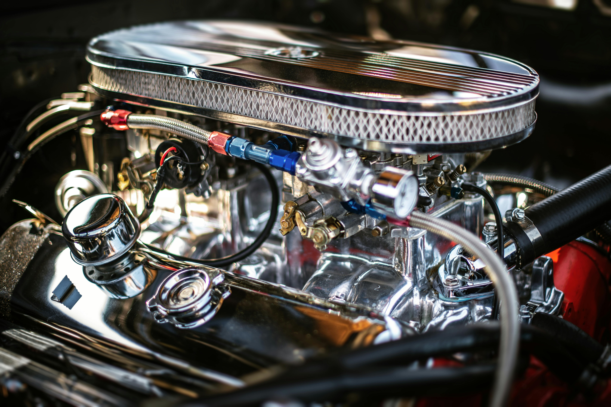
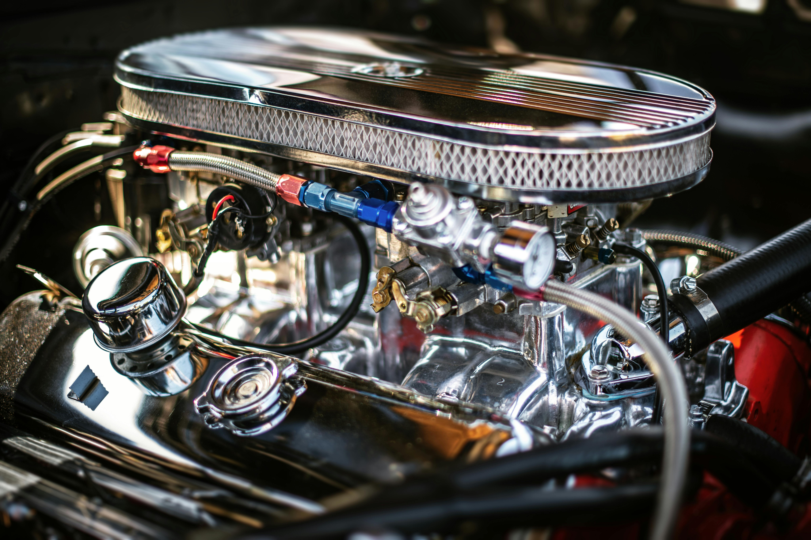
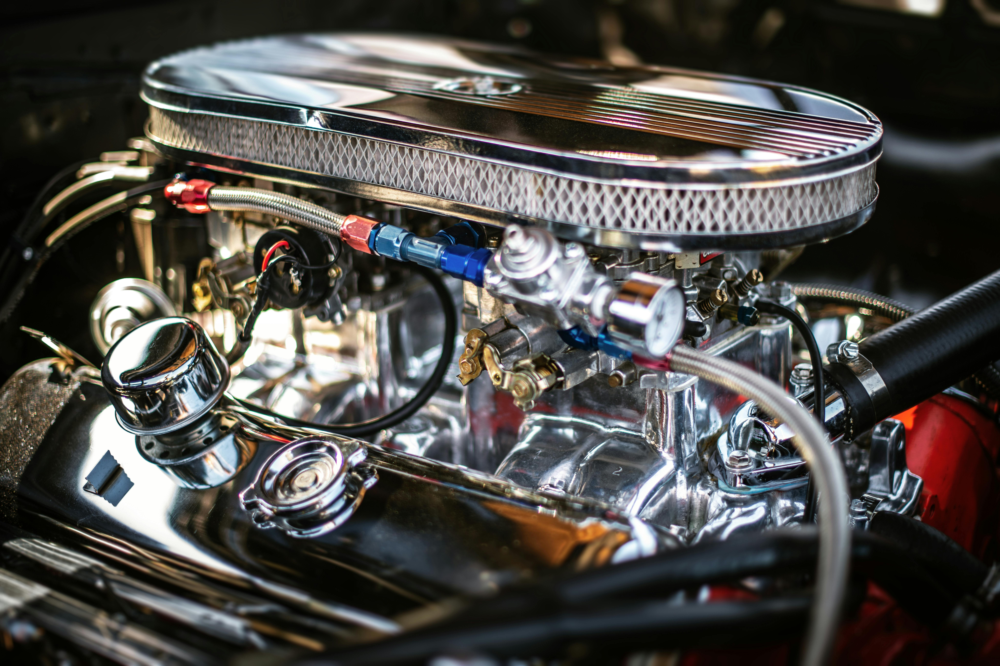

Motor
 

O Civic Touring conta com um motor de 173 cavalos com 22,4 KGFM de de força. O Civic faz 0 à 100 em apenas 7.8 segundos, conta com um cambio tipo CVT com 7 marchas, e tração dianteira.

O Civic Touring conta com um motor de 173 cavalos com 22,4 KGFM de de força. O Civic faz 0 à 100 em apenas 7.8 segundos, conta com um cambio tipo CVT com 7 marchas, e tração dianteira.
O Novo Painel Digital TFT de 10.2" de alta definição com função de controle, garante maior autonomia e agilidade na leitura das informações, o que torna a sua experiência a bordo do Novo Civic Híbrido ainda mais agradável. Navegação mais amigável e intuitiva, integra funções do navegador GPS, áudio, Bluetooth, câmera de marcha à ré e controles no volante.
Acione comandos de áudio e faça suas ligações sem tirar as mãos do volante. A função Voice Tag, torna tudo ainda mais prático, sendo acionada por comando de voz. Chave inteligente com sensor de aproximação para destravamento e travamento das portas automáticos, sem a necessidade de uso da chave. Praticidade em todos os detalhes.
Garantia de segurança e estabilidade em qualquer situação. O sistema VSA proporciona equilíbrio para a tração e frenagem das rodas, de maneira automática e independente.
O Driver Attention Monitor monitora e avalia continuamente o comportamento do motorista ao volante para ajudar a determinar o nível de atenção do motorista, em caso afirmativo, avisa o motorista para fazer uma pausa.